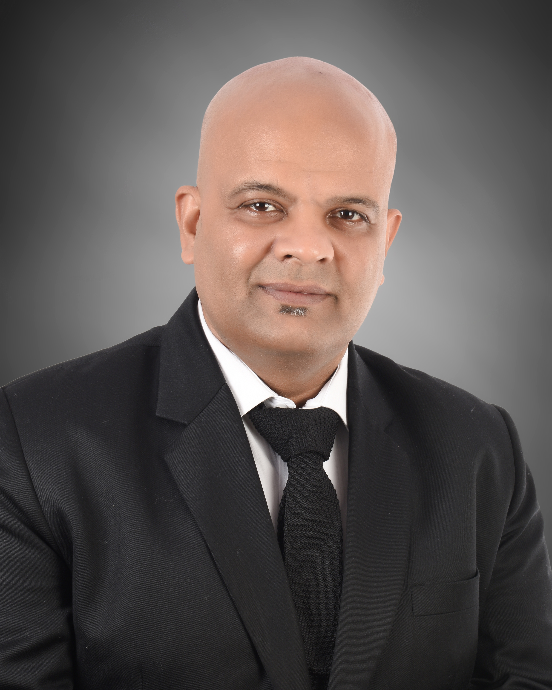

Suraj Prakash Pandey
Call @ 7303227208
Email id - pandeyansw28@gmail.com
Experience
Deputy CTO - Uniqus (Feb 2023 till date)
- As part of Uniqus drive in addressing consulting through technology , Suraj leads
the complete technology realm of Uniqus responsible for building up the cloud infrastructure
- Responsible for product development around Accounting and ESG
- Currently developing 4 products in parallel :
- The out of box Knowledge Center fully catering to accounting and ESG needs where the tool summarizes
the search results according to whitelisted urls and provide top 10 best results driven by generative AI
- A collaborative tool which the Uniqus user can use to collaborate with clients and greate project plans,
chat within the tool and upload different versions of the documents
- The financial Reporting tool which can produce the company's financial and annual report end to end
- ESG tool which provides end to end KPIs according to different ESG standards together with Peer Benchmarking
Executive Director - Ernst & Young (2019 - 2023)
- Financial Accounting and Advisory Services
- Working as Technology head and consultant driving the technology sales as well as ensuring innovation within team
- Engendered 68 Cr worth of deal within a span of 24 months and developed 6 products automating entire financial reporting,
Invoice reconciliation, Deferred tax calculation, Accounts Payable and Contract Management, Sustainability Analytics, FinBots
- Won around 52 clients within 3.5 yrs
- Held open webinars across India on Blockchain and Data federation
- Ata federation link: https://ey-india.adobeconnect.com/pj9zlqoe52op/
- Blockchain link : https://ey-india.adobeconnect.com/pa6tra0ia7o2/
Senior Manager- Application Automation Engineering, Manager - Accenture - 2009 till 2018
- Was responsible for 35+ M in revenue with 400+ FTEs across globe (USA, Mexico & India)
- Provide leadership to conduct multiple client workshops on emerging technologies and impact on banking business
- Part of client leadership team to define automation journey for Bank
- Was part of important strategy for Bank and involved in BREXIT transformation work
- Innovation lead for Accenture Automation Capability and drove several modernizations
- Integral part of Accenture's Global Capability to provide thought leadership on contemporary trends like Touchless Testing with artificial intelligence driven automation tool
with inbuilt DevOps for execution leading to higher productivity and lower total cost of ownership
- Clients Supported: Bank of America, Merrill Lynch, Fannie Mae, Freddie Mac, SunTrust Bank
Associate Manager, Team Lead, Senior Software Engineer
- Part of Global Offshore Delivery Lead for large US based Bank
- Handled multiple releases across technologies and methodologies
- Built strong agile capabilities, started in sprint automation and established agile bays at offshore
- Contributed highly to COE(Center of Excellence) and worked on to establish standards and processes
- Drove training for automation across delivery units of around 600 + automation resources
- Client Supported: Barclays, ABN AMRO, Bank of America
Education
- 2000 - 01 : Bachelor of Technology - Gulbarga University
- 2016 - 17 : Certified Technology Executive Development from MIT
- 2017 : Machine Learning - Standford University